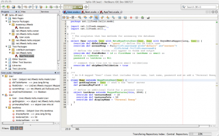

Lets start by taking off of the discussion some important things:
Using an IDE and taking advantage of what it has to offer doesn’t mean you’re a bad programmer, and using a good text editor doesn’t mean you’re a good one.
Using an IDE has the potential to turn you into a bad programmer.
Relaying on an IDE can make you a bad programmer.
Depending on an IDE means your a bad programmer.
I think a lot of people will agree with this, so lets move on.
I’ll keep updating this list in the future, if you have something you’d like to be added please let me know.
So what is wrong with IDEs?
Extra layer of issues and bugs
IDEs usually require a bit (some times a lot) of configuration to do the job, and so it becomes yet a another source of things that can go wrong.
- Does the developing server doesn’t run? Chances are it’s the IDE fault, not your code.
- The code doesn’t compile? Well, your code is probably fine, it’s just the IDE doesn’t know shit about the libraries, or maybe some nasty configuration is needed.
Don’t mess up with my files!
I know better which files should be where, or contain what. Stop making my directory tree a mess.
Don’t mess up with my version control system!
A lot of IDEs start randomly touching the version control system without the programmers consent, and end up just screwing it. Some IDEs don’t do such a thing by default, but some others do. Shame.
Lots of very basic and common operations require a mouse click
Want to compile? Click here. Want to debug? Click over there. Want to load a file? Click here and repeat till you find the file you want.
Menu-driven programming is stupid, stop it!
Yes, there are usually keyboard hot keys, but that’s not always the case.
Documentation becomes optional if the IDE has button for that
When I want to use a library or do something I want documentation!, don’t just tell me “click there and it will automatically work”.
Sometimes I want to create some configuration files or code snippet by my self, to say “Click here, then click there” is NOT valid documentation; I want to know how it is made from scratch, even if I’m going to automatically generate it afterwards.
Stop wasting my pixels!
The code! I want the code to be the main thing in my screen, not just a tiny spot in the center.
Stop using half of my screen space with useless icons to perform actions that must have a keyboard short cut.
Bad programming languages enablers
IDEs are bad programming languages enablers.
If it’s hard to write software in a language using a text editor, and an IDE becomes vital; That tells us more about the language than the editor: needless verbosity, cumbersome syntax and import statements that are hard to write by hand are examples of problems of the language. If your language needs a big, heavy, slow and bloated piece of software to be used, then your language sucks.
An editor please! A good editor!!!
I work with text! I want and I need the text editing to be great. The code is well structured and thus it allows for neat editing features to be implemented.
IDE text editing mechanisms should be better than those of a word processor.
Having to use the mouse for basic tasks is already bad enough, but having to use the mouse to edit text? We can do better.
Syntax checking, completion, etc. All of that is nice, but the editor is still the most important part.
Don’t force me to use the mouse
Don’t use the mouse! Code is text, I want to keep my hands in the keyboard.
Programming is already a mental exhausting task, there is no need to make it a physically exhausting task as well. Moving your hands from the keyboard to the mouse back and ford thousands of times like you’re doing cardio to reach some stupid buttons in a GUI or to accomplish text editing because the IDE’s editor sucks is just plain stupid, it hurts your arms, shoulders and back.
Give me my resources back!
I want all that memory and CPU for the compilation and testing, not for the code editing!
For me, as a rule of thumb, if the tool I use to edit code takes more than 500 milliseconds to start, it is unacceptable. If it needs more than a few MB of memory or if it consumes more than 5% of my CPU time, it’s just atrocious.
In other words: if it takes more than 1 second to load, it’s stupid.
Programmable or die
If you don’t have something you would like to have, or you have an idea to improve your work flow you should be able to just implement it! (Emacs, Vim, Sublime and Atom are good examples).
A lot of IDEs allow for a fair bit of this via plugin mechanisms, but it’s most of the time not flexible enough.
Do one thing well
Combine small, well written specialized tools following the UNIX philosophy, don’t put everything in one gigantic and horrible heap of crap.
If you need to format your code, lint it, compile it, do version control, search thought the codebase, or any other common task, you should leverage existing pieces of software that are good at doing specialized tasks. Don’t write one bloated program to do everything and takes half an hour to load.
IDE dependent libraries?
How on earth is it possible for a library to work on an IDE but not on another?
I’ve seen this quite a bit on C/C++ targeted IDEs. It’s already bad enough for it to be compiler dependent in some cases, but IDE dependent? You got to be kidding me!
Don’t spam me
Can you please stop dropping pop ups and hints to me so I can see the freaking code?
Update available!, New button to click!, Want me to do insert task here?, Want to buy cheap Viagra?. If I want something, I will ask for it!
Fast, simple and automatic is one thing; Treating the programmer as a retarded is another.
Give me my codebase back!
Let me compile without the IDE! Some IDEs tend to be greedy in such a way that compiling outside of the IDE becomes nearly impossible.
Want to compile from your terminal? Too bad, this codebase was created with XYZ IDE and so using it is the only way to make it work.
This also applies to the redistribution of software as IDE projects, making it useless if you’re not using the exact same IDE.
I know what I’m doing
If the IDE knows more than you, you’re a moron. Programmers don’t like magic. Programmers’s job is to know how things work.
This implies that you could be able to do your work without and IDE. This doesn’t means that you necessarily should, but if you can’t, then you’re not much of a programmer.
Automation is good!, but if you must use an IDE to implement, lets say, a SOAP web service in a JSF application because there is no other way in which you don’t have to go through a traumatic process, then you are under lots of shit.
If you can’t do something without an IDE, your language sucks, you suck, or both.
Of course not every IDE has all those problems at the same time but just a subset of them.